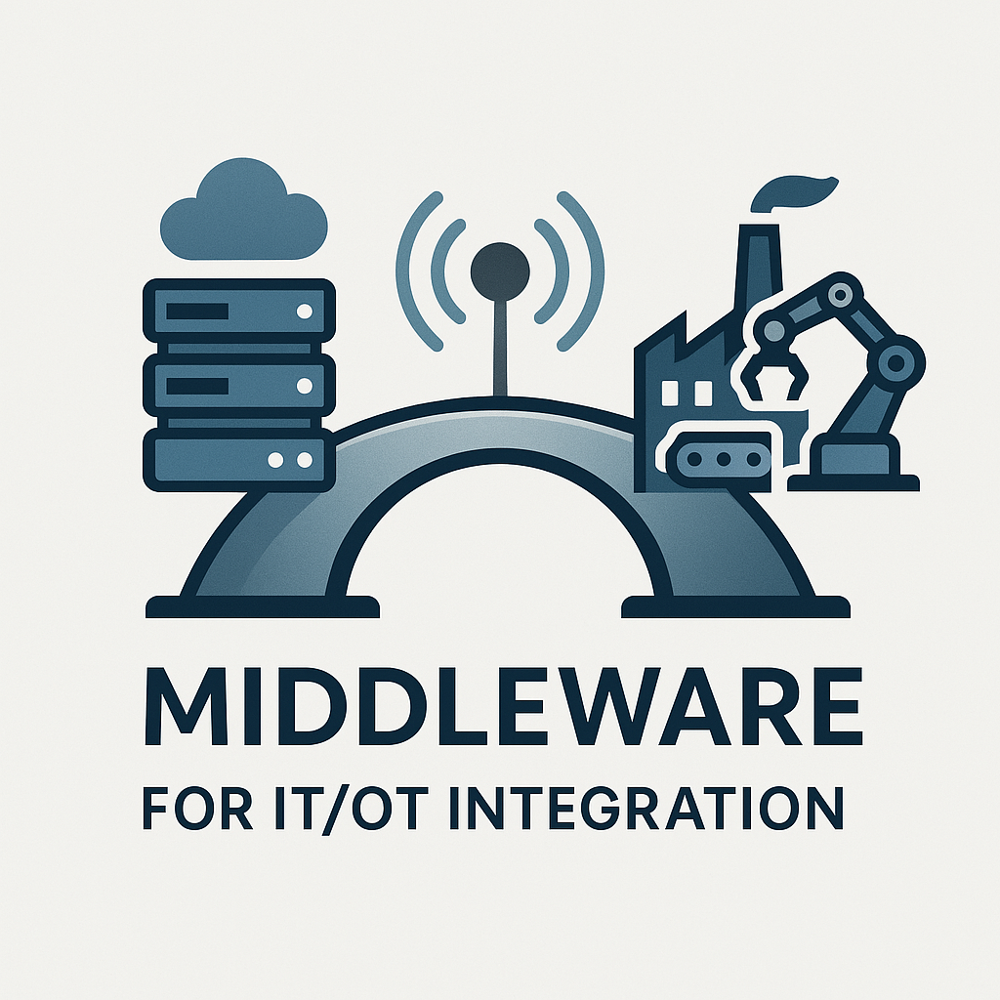

Middleware for IT/OT Integration
December 15-19, 2025
Vanderbilt University, Nashville, TN, USA
Vanderbilt University, Nashville, TN, USA
| Home | Registration | Program | Directions | Flyer |
 IT/OT integration bridges the gap between Information Technology (IT) systems, which manage data and business processes, and Operational Technology (OT) systems, which control and monitor industrial operations. It is a foundational element to drive digital transformation across industries. This convergence enables real-time data sharing and collaboration between enterprise-level applications and physical machinery, leading to smarter decision-making, improved efficiency, enhanced productivity, greater operational transparency, and enhanced safety. Developing middleware for integrated solutions that bridge the digital and physical worlds unlocks the full potential of the Industrial Internet of Things (IIoT) and paves the way for smarter, more resilient operations. Despite challenges like legacy systems and differing priorities, successful IT/OT integration is a cornerstone of modern, data-driven industrial environments.
The primary goal of this workshop is to address the challenges and present advanced and innovative algorithms, models, techniques, architectures, specifications, tools, and frameworks that bring diverse middleware technologies at the interaction of Information Technology (IT) and Operational Technology (OT).
Contributions addressing both theoretical and practical applications, including but not limited to, the following topics are sought for submission:
There will be keynotes at the workshop related to IT/ OT integration.
Keynote Speakers:
Dr. Shashank Shekhar is a Senior Key Expert at Siemens
Foundational Technologies, Princeton, New Jersey.
Mr. Chris Woods is a Senior Key Expert at Siemens
Foundational Technologies, Princeton, New Jersey.
Dr. Ajay Chhokra is a Research Scientist at the
Institute for Software Integrated Systems affiliated with Vanderbilt
University, Nashville, Tennessee.
Dr. Aniruddha S Gokhale is a Full Professor of
Computer Science and Engineering, with a primary appointment in the
Dept of Computer Science, and a Senior Research Scientist at the
Institute for Software Integrated Systems (ISIS) both at Vanderbilt
University, Nashville, Tennessee.
Dr. Florian Frick is a Group Leader for "Real-time communication
and control hardware" at the Institute for Control Engineering of Machine Tools and
Manufacturing Units, Stuttgart, Germany.
MITOTI 2025 proceedings will be published in the ACM Digital
Library. Authors are invited to submit original, unpublished
research papers. Papers must be written in English and strictly
following ACM SIGCONF style as prescribed on the main Middleware
2025 website. Papers are to be submitted through the HotCRP system.
Two types of submissions are accepted:
Please submit your papers at https://mitoti25.hotcrp.com/
Submitted papers will be evaluated according to their rigor, significance, originality, technical quality and exposition, by at least three distinct members of an international program committee. At least one author of each accepted paper must register and participate in the workshop. Registration is subject to the terms, conditions, and procedures of the main conference.
mitoti-workshop@googlegroups.com